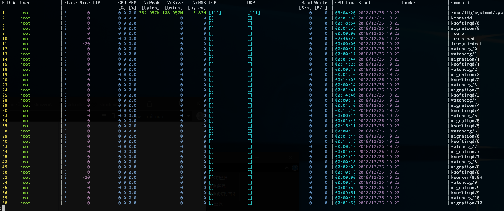

4 Great Cli Tools Written in Rust
随着 Rust 生态越来越繁盛，使用 Rust 实现的小工具越来越多，下面推荐4个我试用后觉得不错的工具
starship
starship 是一个类似于 oh-my-zsh 的美化工具，而且它还支持 bash 和 fish。
它的特性很多，但我最喜欢的是可定制化且信息丰富的 Git 分支和工作区信息，当前工作区项目版本信息和后台任务提示。 想了解更多特性可以参考文档。
它的安装和配置也非常简单。
首先需要安装一款 Powerline 字体，用过 oh-my-zsh 的应该都安装了，如果没有，可以试试 Fira Code
接着安装 starship。在 Mac 上可以使用 Homebrew
brew install starship
如果机器上安装了 Rust 1.33+ 也可以通过 cargo install 安装。
# 需要 pkg-config 和 libssl-dev
sudo apt install -y pkg-config libssl-dev
cargo install starship
也可以直接下载编译好的文件
curl -L https://github.com/starship/starship/releases/download/v0.13.1/starship-v0.13.1-x86_64-unknown-linux-gnu.tar.gz -o /tmp/starship.tar.gz
cd /tmp && tar zxvf /tmp/starship.tar.gz
mv x86_64-unknown-linux-gnu/starship /usr/local/bin/starship
接着在 .zshrc 添加如下内容
eval $(starship init zsh)
starship 的配置文件默认为 ~/.config/starship.toml，我的示例配置文件如下：
add_newline = false
[package]
disabled = true
[character]
symbol = "➜"
error_symbol = "✗"
use_symbol_for_status = true
[git_branch]
symbol = "🌱 "
[golang]
symbol = "G "
[line_break]
disabled = true
[python]
pyenv_version_name = false
pyenv_prefix = "foo "
[rust]
symbol = "⚙️ "
完整配置项解读参考 starship configuration
bat
bat 是 cat 命令的替代品，虽然是 cat 这样简单命令的替换，但 bat 在 Github 项目上的 star 已经 15,009 了，可见大家对 bat 的喜爱。
相比于 cat, bat 添加了语法高亮和 Git 集成等诸多特性。而且也有详细的中文文档。 如何安装和使用我就不再赘述，仅放一张 gif 作为参考。
ffsend
火狐公司推出了一项免费的阅后即焚加密文件共享服务 firefox send，你可以上传文件，设置文件保存时间和可被下载次数，然后将文件下载 链接分享给别人以分享文件。最大上传2.5G大小的文件，在分享小文件但又不想被百度云限速时很有用。
ffsend 是使用 firefox send 服务的命令行工具。通过它可以在命令行中完成文件上传和下载。
目前 ffsend 还在 alpha 阶段，下载方式有限，最简单的方式就是
cargo install ffsend
其他安装方式可以参考 ffsend 的文档。
ffsend 的用法也很简单
# 上传文件
ffsend upload my-file.txt
https://send.firefox.com/#sample-share-url
# 更多上传参数设置
# - 最多下载20次
# - 输入密码来加密上传的文件
# - 上传前归档文件
# - 将分享链接复制到剪切板
# - 在浏览器中打开分享链接
$ ffsend upload --downloads 20 --password --archive --copy --open my-file.txt
Password: ******
https://send.firefox.com/#sample-share-url
procs
procs 是 ps 命令的替代品。相比于 ps 繁多的参数选项，procs 相对简单，信息展现更加直观，而且添加了语法高亮。
安装方法如下：
# homebrew
sudo brew install procs
# cargo 安装
cargo install procs
不带参数的 procs 命令会展示所有进程。
procs

如果要显示某个用户的所有进程也很简单
procs rookie
更多更复杂的用法可以在项目的 README 中找到，这里不再赘述。